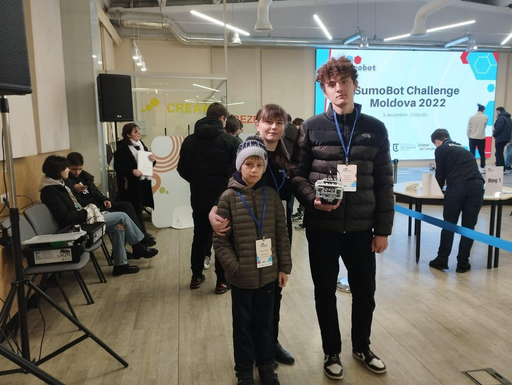
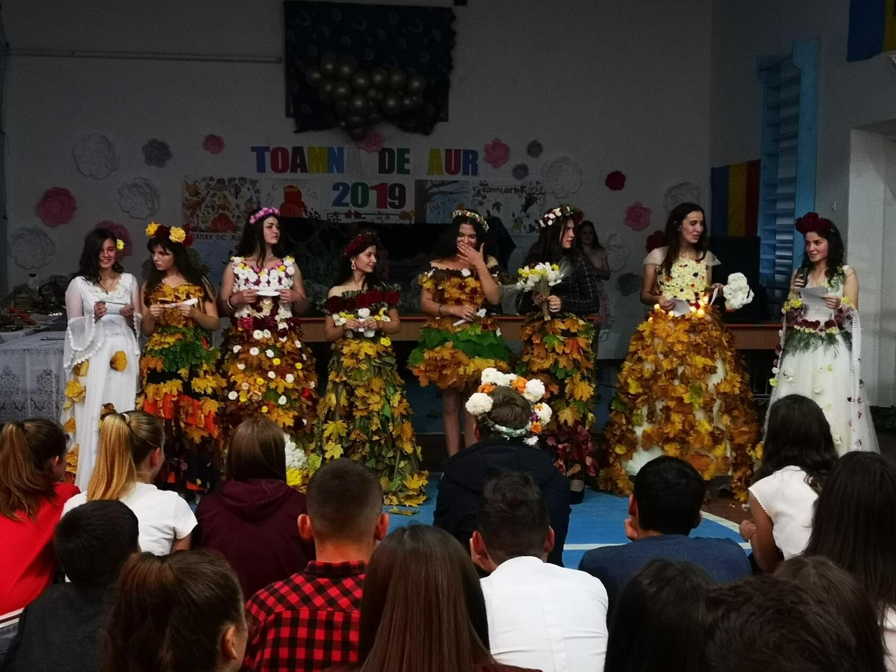

|

|

|
Participarea la activități extrașcolare și
extracurriculare este esențială pentru noile generații și se află în legătură directă cu viitorul
copiilor. Prin alegerea unor activități extrașcolare, părinții le oferă posibilitatea să își exploreze
pasiunile, îi ajută să își dezvolte puterile dar și încrederea în sine.Ca activitate extrașcolară pentru
ciclul primar,gimnazial și liceal, copiii se înscriu la un club de programare în care învață limbaje de
programare și cum să folosească calculatorul pentru un viitor de succes.Sunt o mulțime de activități în
Liceul Teoretic "Ștefan cel Mare și Sfânt “ în care elevii participă cu mare drag.Câteva enumerații:Ziua profesorului,ziua liceului,anul nou,balul bubocilor,toamna de aur,8 martie,robotica,corul liceului,voleiul,baschetul.
|
|